- 01 阅读此专栏的正确姿势.md.html
- 02 环境准备：千里之行，始于足下.md.html
- 03 常用性能指标：没有量化，就没有改进.md.html
- 04 JVM 基础知识：不积跬步，无以至千里.md.html
- 05 Java 字节码技术：不积细流，无以成江河.md.html
- 06 Java 类加载器：山不辞土，故能成其高.md.html
- 07 Java 内存模型：海不辞水，故能成其深.md.html
- 08 JVM 启动参数详解：博观而约取、厚积而薄发.md.html
- 09 JDK 内置命令行工具：工欲善其事，必先利其器.md.html
- 10 JDK 内置图形界面工具：海阔凭鱼跃，天高任鸟飞.md.html
- 11 JDWP 简介：十步杀一人，千里不留行.md.html
- 12 JMX 与相关工具：山高月小，水落石出.md.html
- 13 常见的 GC 算法（GC 的背景与原理）.md.html
- 14 常见的 GC 算法（ParallelCMSG1）.md.html
- 15 Java11 ZGC 和 Java12 Shenandoah 介绍：苟日新、日日新、又日新.md.html
- 16 Oracle GraalVM 介绍：会当凌绝顶、一览众山小.md.html
- 17 GC 日志解读与分析（基础配置）.md.html
- 18 GC 日志解读与分析（实例分析上篇）.md.html
- 19 GC 日志解读与分析（实例分析中篇）.md.html
- 20 GC 日志解读与分析（实例分析下篇）.md.html
- 21 GC 日志解读与分析（番外篇可视化工具）.md.html
- 22 JVM 的线程堆栈等数据分析：操千曲而后晓声、观千剑而后识器.md.html
- 23 内存分析与相关工具上篇（内存布局与分析工具）.md.html
- 24 内存分析与相关工具下篇（常见问题分析）.md.html
- 25 FastThread 相关的工具介绍：欲穷千里目，更上一层楼.md.html
- 26 面临复杂问题时的几个高级工具：它山之石，可以攻玉.md.html
- 27 JVM 问题排查分析上篇（调优经验）.md.html
- 28 JVM 问题排查分析下篇（案例实战）.md.html
- 29 GC 疑难情况问题排查与分析（上篇）.md.html
- 30 GC 疑难情况问题排查与分析（下篇）.md.html
- 31 JVM 相关的常见面试问题汇总：运筹策帷帐之中，决胜于千里之外.md.html
- 32 应对容器时代面临的挑战：长风破浪会有时、直挂云帆济沧海.md.html
- 捐赠
26 面临复杂问题时的几个高级工具：它山之石，可以攻玉
前面提到了很多 JVM 的分析工具，本节里我们会再介绍几种有用的工具，大家可以在需要的时候按需使用。
OOM Killer
在前面的章节，我们简单提及过 Linux 系统上的 OOM Killer（Out Of Memory killer，OOM 终结者）。假如物理内存不足，Linux 会找出“一头比较壮的进程”来杀掉。
OOM Killer 参数调优
Java 的堆内存溢出（OOM），是指堆内存用满了，GC 没法回收导致分配不了新的对象。
而操作系统的内存溢出（OOM），则是指计算机所有的内存（物理内存 + 交换空间），都被使用满了。
这种情况下，默认配置会导致系统报警，并停止正常运行。当然，将 /proc/sys/vm/panic_on_oom 参数设置为 0 之后，则系统内核会在发生内存溢出时，自动调用 OOM Killer 功能，来杀掉最壮实的那头进程（Rogue Process，流氓进程），这样系统也许就可以继续运行了。
以下参数可以基于单个进程进行设置，以手工控制哪些进程可以被 OOM Killer 终结。这些参数位于 proc 文件系统中的 /proc/pid/ 目录下，其中 pid 是指进程的 ID。
- oom*adj：正常范围是 -16 到 15，用于计算一个进程的 OOM 评分（oom*score）。这个分值越高，该进程越有可能被 OOM Killer 给干掉。如果设置为 -17，则禁止 OOM Killer 杀死该进程。
- proc 文件系统是虚拟文件系统，某个进程被杀掉，则 /proc/pid/ 目录也就被销毁了。
OOM Killer 参数调整示例
例如进程的 pid=12884，root 用户执行：
$ cat /proc/12884/oom_adj
0
# 查看最终得分
$ cat /proc/12884/oom_score
161
$ cat /proc/12884/oom_score_adj
0
# 修改分值 ...
$ echo -17 > /proc/12884/oom_adj
$ cat /proc/12884/oom_adj
-17
$ cat /proc/12884/oom_score
0
# 查看分值修正值
$ cat /proc/12884/oom_score_adj
-1000
# 修改分值
$ echo 15 > /proc/12884/oom_adj
$ cat /proc/12884/oom_adj
15
$ cat /proc/12884/oom_score
1160
$ cat /proc/12884/oom_score_adj
1000
这样配置之后，就允许某个占用了最多资源的进程，在操作系统内存不足时，也不会杀掉他，而是先去杀别的进程。
案例
我们通过以下这个案例来展示 OOM Killer。
1. 问题描述
某个 Java 应用经常挂掉，原因疑似 Java 进程被杀死。
2. 配置信息
配置如下：
- 服务器：阿里云 ECS
- IP 地址：192.168.1.52
- CPU：4 核，虚拟 CPU Intel Xeon E5-2650 2.60GHz
- 物理内存：8GB
3. 可用内存
内存不足：4 个 Java 进程，2.1+1.7+1.7+1.3=6.8G，已占用绝大部分内存。
4. 查看日志
Linux 系统的 OOM Killer 日志：
sudo cat /var/log/messages | grep killer -A 2 -B 2
经排查发现，具有如下日志：
$ sudo cat /var/log/messages | grep killer -A 2 -B 2
May 21 09:55:01 web1 systemd: Started Session 500687 of user root.
May 21 09:55:02 web1 systemd: Starting Session 500687 of user root.
May 21 09:55:23 web1 kernel: java invoked oom-killer: gfp_mask=0x201da，order=0，oom_score_adj=0
May 21 09:55:24 web1 kernel: java cpuset=/ mems_allowed=0
May 21 09:55:24 web1 kernel: CPU: 3 PID: 25434 Comm: java Not tainted 3.10.0-514.6.2.el7.x86_64 #1
--
May 21 12:05:01 web1 systemd: Started Session 500843 of user root.
May 21 12:05:01 web1 systemd: Starting Session 500843 of user root.
May 21 12:05:22 web1 kernel: jstatd invoked oom-killer: gfp_mask=0x201da，order=0，oom_score_adj=0
May 21 12:05:22 web1 kernel: jstatd cpuset=/ mems_allowed=0
May 21 12:05:23 web1 kernel: CPU: 2 PID: 10467 Comm: jstatd Not tainted 3.10.0-514.6.2.el7.x86_64 #1
可以确定，确实是物理内存不足引起的。
注意：所有 Java 进程的
-Xmx加起来，如果大于系统的剩余内存，就可能发生这种情况。
查询系统所有进程的 oom_score：
ps -eo pid,comm,pmem --sort -rss | awk '{"cat /proc/"$1"/oom_score" | getline oom; print $0"\t"oom}'
重要提示：
如果调整过某个进程的 oom_adj 配置，那么由该进程创建的所有进程，都会继承 oom_score 分值。例如，假设某个 sshd 进程受 OOM Killer 的保护，则所有的 SSH 会话也将受到保护。这样的配置，如果发生 OOM，有可能会影响 OOM Killer 拯救系统的功能。
我们现在设想一个场景，假如我们想要随时调试跟踪线上运行的系统，需要用什么样的工具呢？下面就介绍 2 款这样的工具。
BTrace 诊断分析工具
BTrace 是基于 Java 语言的一款动态追踪工具，可用于辅助问题诊断和分析。
BTrace 项目地址：
在 Wiki 页面 中有一些简单的介绍：
BTrace 基于 ASM、Java Attach API、Instruments 开发，提供很多注解。通过这些注解，可以通过 Java 代码来编写 BTrace 脚本进行只读监控，而无需深入了解 ASM 对字节码的操纵。
下面我们来实际操作一下。
BTrace 下载
找到 Release 页面，找到最新的压缩包下载：
下载完成后解压即可使用：
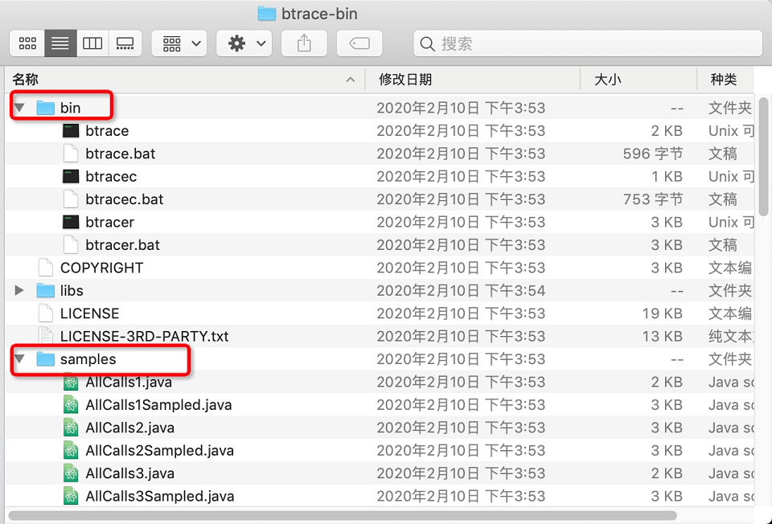
可以看到，bin 目录下是可执行文件，samples 目录下是脚本示例。
示例程序
我们先编写一个有入参有返回值的方法，示例如下：
package demo.jvm0209;
import java.util.UUID;
import java.util.concurrent.TimeUnit;
public class RandomSample {
public static void main(String[] args) throws Exception {
//
int count = 10000;
int seed = 0;
for (int i = 0; i < count; i++) {
seed = randomHash(seed);
TimeUnit.SECONDS.sleep(2);
}
}
public static int randomHash(Integer seed) {
String uuid = UUID.randomUUID().toString();
int hashCode = uuid.hashCode();
System.out.println("prev.seed=" + seed);
return hashCode;
}
}
这个示例程序很简单，循环很多次调用某个方法，使用其他程序也是一样的。
然后运行程序，可以看到控制台每隔一段时间就有一些输出：
prev.seed=1601831031
...
BTrace 提供了命令行工具，但使用起不如在 JVisualVM 中方便，下面通过 JVisualVM 中集成 BTrace 插件进行简单的演示。
JVisualVM 环境中使用 BTrace
安装 JVisualVM 插件的操作，我们在前面的章节《[JDK 内置图形界面工具]》中介绍过。
细心的同学可能已经发现，在安装 JVisualVM 的插件时，有一款插件叫做“BTrace Workbench”。安装这款插件之后，在对应的 JVM 实例上点右键，就可以进入 BTrace 的操作界面。
1. BTrace 插件安装
打开 VisualVM，选择菜单“工具–插件(G)”：
然后在插件安装界面中，找到“可用插件”：
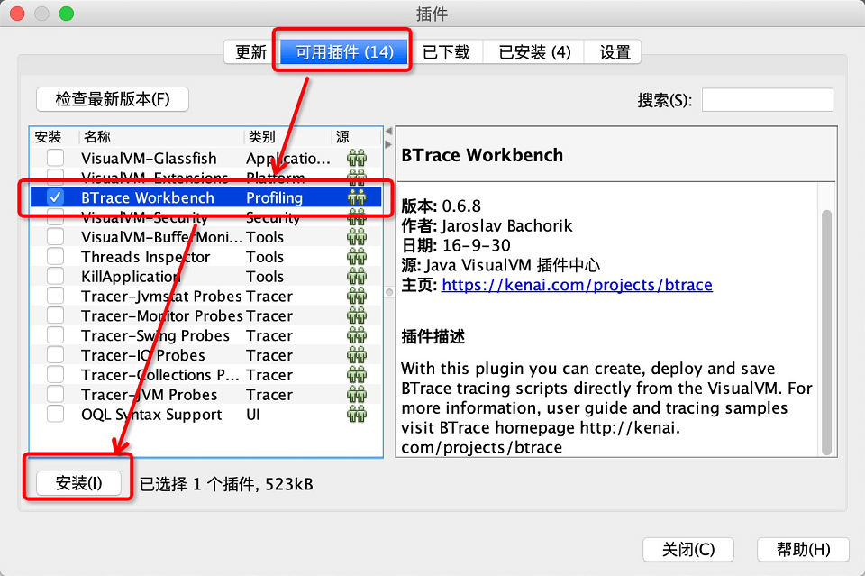
勾选“BTrace Workbench”之后，点击“安装(I)”按钮。
如果插件不显示，请更新 JDK 到最新版。
按照引导和提示，继续安装即可。
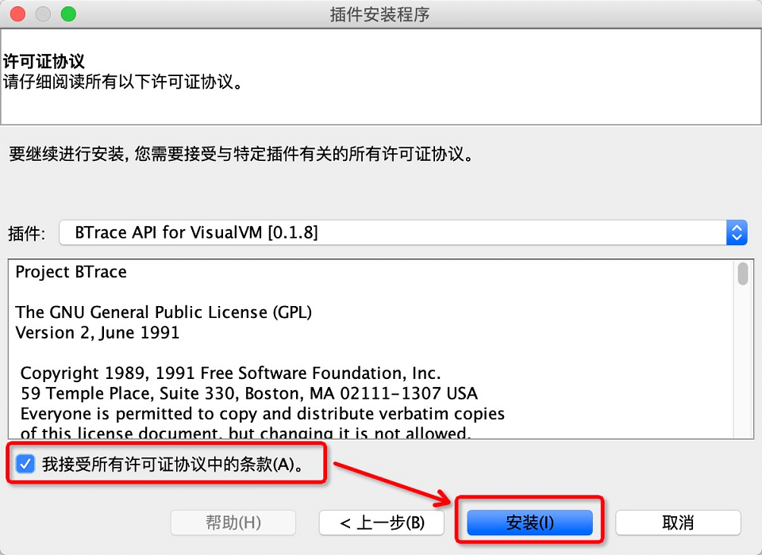
接受协议，并点击安装。
等待安装完成：
点击“完成”按钮即可。
BTrace 插件使用
打开后默认的界面如下：
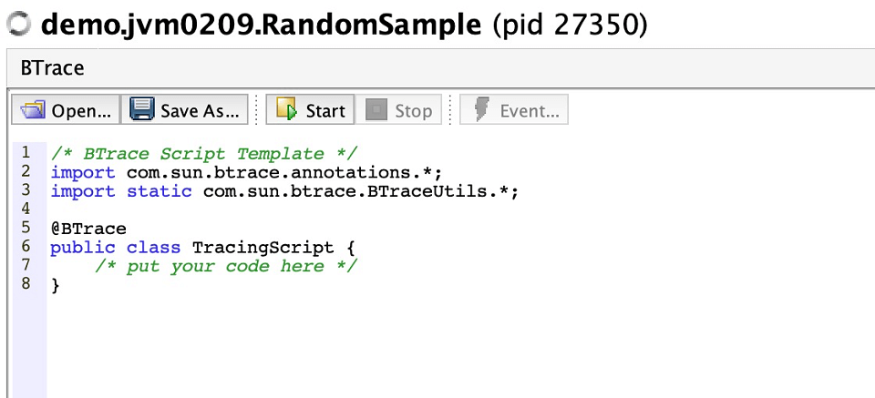
可以看到这是一个 Java 文件的样子。然后我们参考官方文档，加一些脚本进去。
BTrace 脚本示例
我们下载的 BTrace 项目中，samples 目录下有一些脚本示例。 参照这些示例，编写一个简单的 BTrace 脚本：
import com.sun.btrace.annotations.*;
import static com.sun.btrace.BTraceUtils.*;
@BTrace
public class TracingScript {
@OnMethod(
clazz = "/demo.jvm0209.*/",
method = "/.*/"
)
// 方法进入时
public static void simple(
@ProbeClassName String probeClass,
@ProbeMethodName String probeMethod) {
print("entered " + probeClass);
println("." + probeMethod);
}
@OnMethod(clazz = "demo.jvm0209.RandomSample",
method = "randomHash",
location = @Location(Kind.RETURN)
)
// 方法返回时
public static void onMethodReturn(
@ProbeClassName String probeClass,
@ProbeMethodName String probeMethod,
@Duration long duration,
@Return int returnValue) {
print(probeClass + "." + probeMethod);
print(Strings.strcat("(), duration=", duration+"ns;"));
println(Strings.strcat(" return: ", ""+returnValue));
}
}
执行结果
可以看到，输出了简单的执行结果：
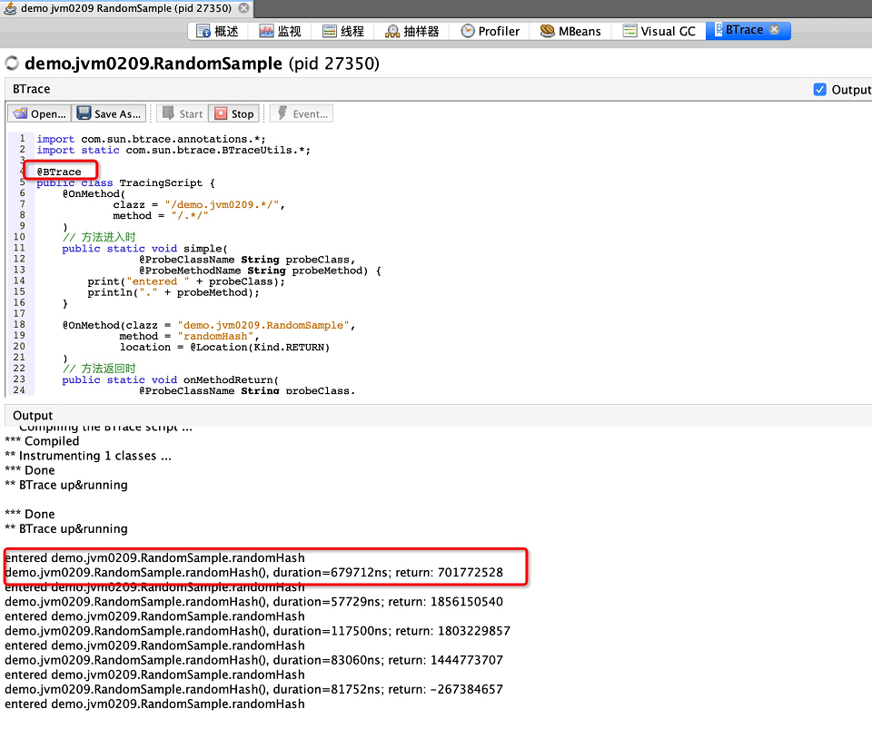
可以和示例程序的控制台输出比对一下。
更多示例
BTrace 提供了很多示例，照着改一改就能执行简单的监控。
Arthas 诊断分析工具
上面介绍的 BTrace 功能非常强大，但是实用限制也不少，环境问题也很多。那么有没有更好的类似工具呢？
本节我们就来介绍一下 Arthas 诊断分析工具，Arthas 项目首页：
Arthas 简介
Arthas（阿尔萨斯）是阿里巴巴推出了一款开源的 Java 诊断工具，深受开发者喜爱。为什么这么说呢？
- Arthas 支持 JDK 6 以及更高版本的 JDK；
- 支持 Linux/Mac/Winodws 操作系统；
- 采用命令行交互模式，同时提供丰富的 Tab 自动补全功能，方便进行问题的定位和诊断；
- 支持 WebConsole，在某些复杂的情况下，打通 HTTP 路由就可以访问。
当我们遇到以下类似问题而束手无策时，可以使用 Arthas 来帮助我们解决：
- 这个类从哪个 jar 包加载的？为什么会报各种类相关的 Exception？
- 我改的代码为什么没有执行到？难道是我没 commit？分支搞错了？
- 遇到问题无法在线上 Debug，难道只能通过加日志再重新发布吗？
- 线上遇到某个用户的数据处理有问题，但线上同样无法 debug，线下无法重现！
- 是否有一个全局视角来查看系统的运行状况？
- 有什么办法可以监控到 JVM 的实时运行状态？
- 怎么快速定位应用的热点，生成火焰图？
Arthas 官方提供了基础教程和进阶教程，以及网页版的命令行模拟器，跟着执行一遍很容易了解相关的功能。
下面我们跟着教程来体验一下。
下载与安装
首先，我们来安装 Arthas：
# 准备目录
mkdir -p /usr/local/tools/arthas
cd /usr/local/tools/arthas
# 执行安装脚本
curl -L https://alibaba.github.io/arthas/install.sh | sh
······
命令行启动：
# 启动
./as.sh -h
Error: telnet is not installed. Try to use java -jar arthas-boot.jar
# 安装telnet
# yum -y install telnet
# brew install telnet
# 再次执行
./as.sh
通过 jar 启动：
# 进入jar目录
cd ~/.arthas/lib/3.1.7/arthas/
# 通过jar启动 arthas
java -jar arthas-boot.jar
使用示例
启动之后显示的信息大致如下图所示：
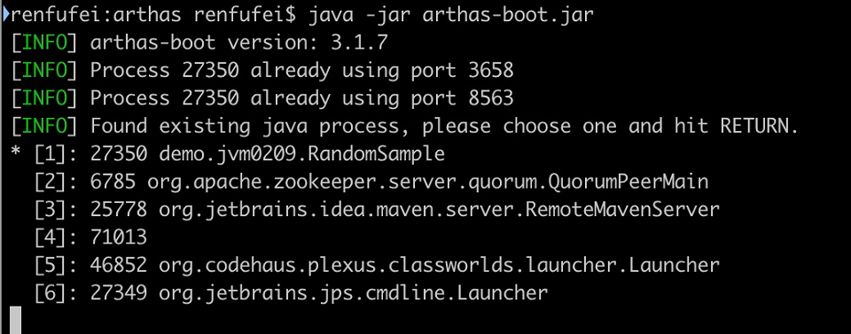
然后我们输入需要连接（Attach）的 JVM 进程，例如 1，然后回车。
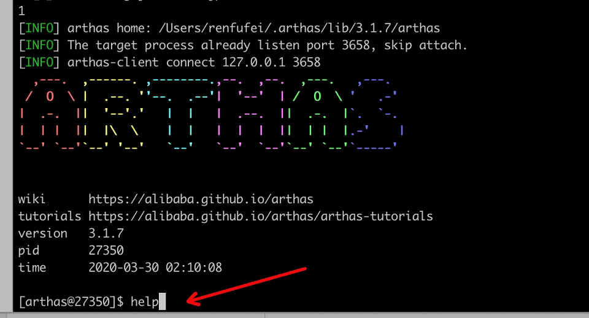
如果需要退出，输入 exit 即可。
接着我们输入 help 命令查看帮助，返回的信息大致如下。
[arthas@27350]$ help
NAME DESCRIPTION
help Display Arthas Help
keymap Display all the available keymap for the specified connection.
sc Search all the classes loaded by JVM
sm Search the method of classes loaded by JVM
classloader Show classloader info
jad Decompile class
getstatic Show the static field of a class
monitor Monitor method execution statistics, e.g. total/success/failure count, average rt, fail rate, etc.
stack Display the stack trace for the specified class and method
thread Display thread info, thread stack
trace Trace the execution time of specified method invocation.
watch Display the input/output parameter, return object, and thrown exception of specified method invocation
tt Time Tunnel
jvm Display the target JVM information
ognl Execute ognl expression.
mc Memory compiler, compiles java files into bytecode and class files in memory.
redefine Redefine classes. @see Instrumentation#redefineClasses(ClassDefinition...)
dashboard Overview of target jvm's thread, memory, gc, vm, tomcat info.
dump Dump class byte array from JVM
heapdump Heap dump
options View and change various Arthas options
cls Clear the screen
reset Reset all the enhanced classes
version Display Arthas version
shutdown Shutdown Arthas server and exit the console
stop Stop/Shutdown Arthas server and exit the console. Alias for shutdown.
session Display current session information
sysprop Display, and change the system properties.
sysenv Display the system env.
vmoption Display, and update the vm diagnostic options.
logger Print logger info, and update the logger level
history Display command history
cat Concatenate and print files
pwd Return working directory name
mbean Display the mbean information
grep grep command for pipes.
profiler Async Profiler. https://github.com/jvm-profiling-tools/async-profiler
这里列出了支持的命令。如果要查看某个命令的帮助信息怎么办呢？ 可以使用 help xxx 的形式。例如：
help thread
如果查看 JVM 信息，输入命令 jvm 即可。
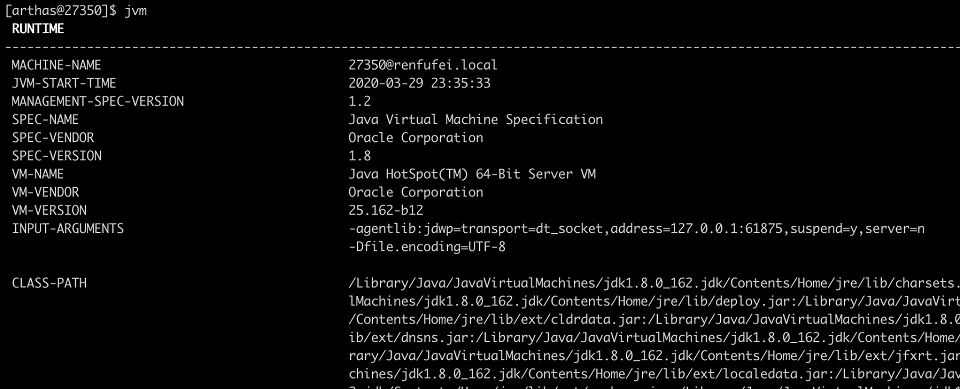
环境变量 sysenv：
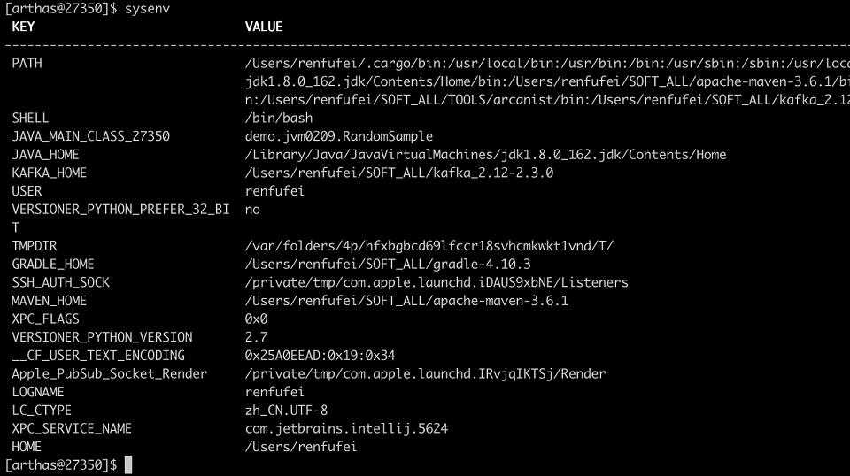
查看线程信息，输入命令 thread：
查看某个线程的信息：
[arthas@27350]$ thread 1
"main" Id=1 TIMED_WAITING
at java.lang.Thread.sleep(Native Method)
at java.lang.Thread.sleep(Thread.java:340)
at java.util.concurrent.TimeUnit.sleep(TimeUnit.java:386)
at demo.jvm0209.RandomSample.main(Unknown Source)
查看 JVM 选项 vmoption：
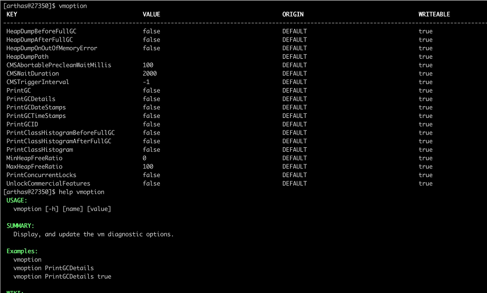
某些选项可以设置，这里给出了示例 vmoption PrintGCDetails true。
查找类 sc：
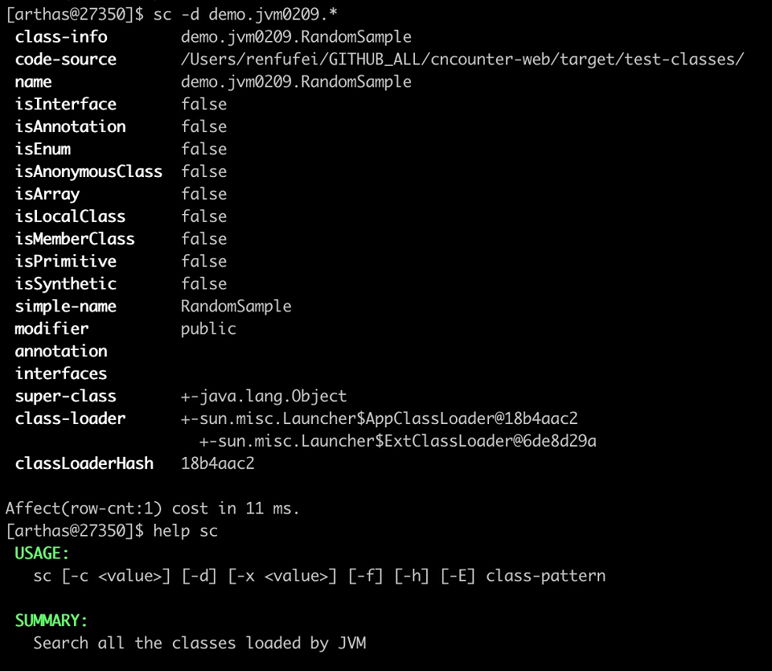
反编译代码 jad：
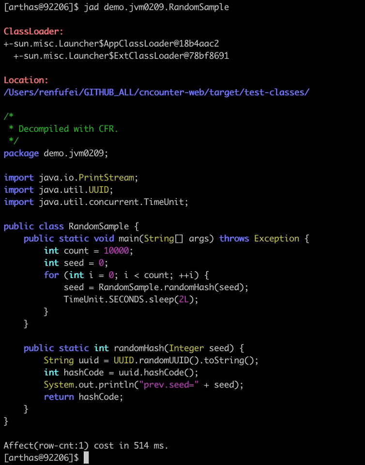
堆内存转储 heapdump：
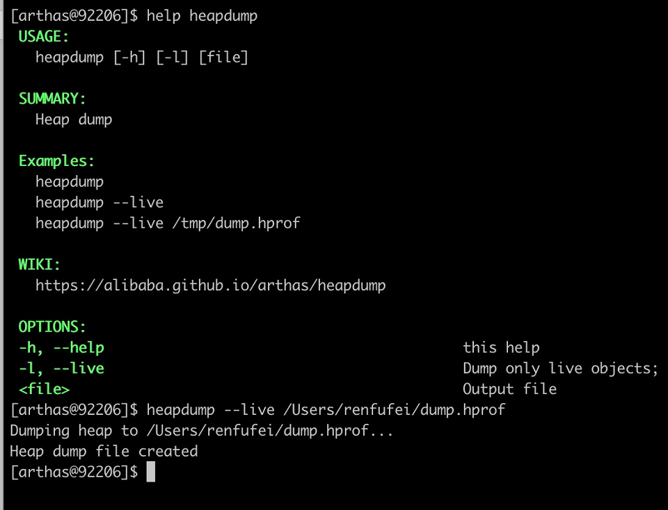
跟踪方法执行时间 trace：
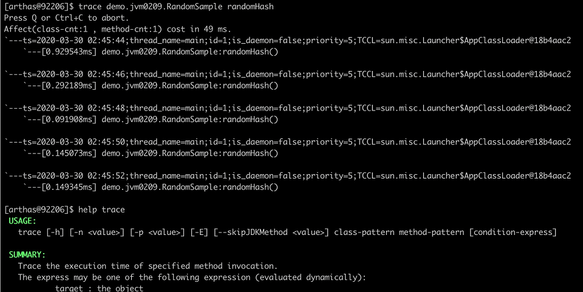
观察方法执行 watch：
可以看到，支持条件表达式，类似于代码调试中的条件断点。 功能非常强大，并且作为一个 JVM 分析的集成环境，使用起来也比一般工具方便。更多功能请参考 Arthas 用户文档。
抽样分析器（Profilers）
下面介绍分析器（profilers，Oracle 官方翻译是“抽样器”）。
相对于前面的工具，分析器只关心 GC 中的一部分领域，本节我们也只简单介绍分析器相关的 GC 功能。
需要注意：不要认为分析器适用于所有的场景。分析器有时确实作用很大，比如检测代码中的 CPU 热点时，但某些情况使用分析器不一定是个好方案。
对 GC 调优来说也是一样的。要检测是否因为 GC 而引起延迟或吞吐量问题时，不需要使用分析器。前面提到的工具（jstat 或原生/可视化 GC 日志）就能更好更快地检测出是否存在 GC 问题.。特别是从生产环境中收集性能数据时，最好不要使用分析器，因为性能开销非常大，对正在运行的生产系统会有影响。
如果确实需要对 GC 进行优化，那么分析器就可以派上用场了，可以对 Object 的创建信息一目了然。换个角度看，如果 GC 暂停的原因不在某个内存池中，那就只会是因为创建对象太多了。所有分析器都能够跟踪对象分配（via allocation profiling），根据内存分配的轨迹，让你知道 实际驻留在内存中的是哪些对象。
分配分析能定位到在哪个地方创建了大量的对象。使用分析器辅助进行 GC 调优的好处是，能确定哪种类型的对象最占用内存，以及哪些线程创建了最多的对象。
下面我们通过实例介绍 3 种分配分析器：hprof、JVisualVM 和 AProf。实际上还有很多分析器可供选择，有商业产品，也有免费工具，但其功能和应用基本上都是类似的。
hprof
hprof 分析器内置于 JDK 之中。在各种环境下都可以使用，一般优先使用这款工具。
性能分析工具——HPROF 简介：
https://github.com/cncounter/translation/blob/master/tiemao*2017⁄20*hprof/20_hprof.md.html
HPROF 参考文档：
https://docs.oracle.com/javase/8/docs/technotes/guides/troubleshoot/tooldescr008.html
要让 hprof 和程序一起运行，需要修改启动脚本，类似这样：
java -agentlib:hprof=heap=sites com.yourcompany.YourApplication
在程序退出时，会将分配信息 dump（转储）到工作目录下的 java.hprof.txt 文件中。使用文本编辑器打开，并搜索“SITES BEGIN”关键字，可以看到：
SITES BEGIN (ordered by live bytes) Tue Dec 8 11:16:15 2015
percent live alloc'ed stack class
rank self accum bytes objs bytes objs trace name
1 64.43% 4.43% 8370336 20121 27513408 66138 302116 int[]
2 3.26% 88.49% 482976 20124 1587696 66154 302104 java.util.ArrayList
3 1.76% 88.74% 241704 20121 1587312 66138 302115 eu.plumbr.demo.largeheap.ClonableClass0006
... 部分省略 ...
SITES END
从以上片段可以看到，allocations 是根据每次创建的对象数量来排序的。第一行显示所有对象中有 64.43% 的对象是整型数组 (int[])，在标识为 302116 的位置创建。搜索“TRACE 302116”可以看到：
TRACE 302116:
eu.plumbr.demo.largeheap.ClonableClass0006.<init>(GeneratorClass.java:11)
sun.reflect.GeneratedConstructorAccessor7.newInstance(<Unknown Source>:Unknown line)
sun.reflect.DelegatingConstructorAccessorImpl.newInstance(DelegatingConstructorAccessorImpl.java:45)
java.lang.reflect.Constructor.newInstance(Constructor.java:422)
现在，知道有 64.43% 的对象是整数数组，在 ClonableClass0006 类的构造函数中，第 11 行的位置，接下来就可以优化代码，以减少 GC 的压力。
Java VisualVM
本章前面的第一部分，在监控 JVM 的 GC 行为工具时介绍了 JVisualVM，本节介绍其在分配分析上的应用。
JVisualVM 通过 GUI 的方式连接到正在运行的 JVM。连接上目标 JVM 之后：
- 打开“工具”–>“选项”菜单，点击 性能分析（Profiler）标签，新增配置，选择 Profiler 内存，确保勾选了“Record allocations stack traces”（记录分配栈跟踪）。
- 勾选“Settings”（设置）复选框，在内存设置标签下，修改预设配置。
- 点击“Memory”（内存）按钮开始进行内存分析。
- 让程序运行一段时间，以收集关于对象分配的足够信息。
- 单击下方的“Snapshot”（快照）按钮，可以获取收集到的快照信息。
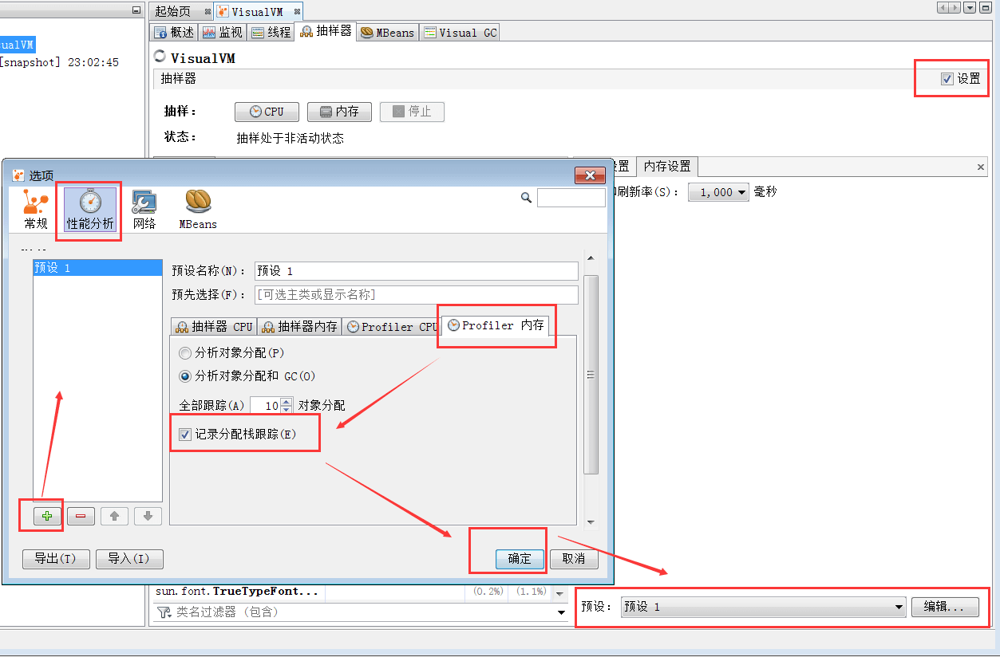
完成上面的步骤后，可以得到类似这样的信息：
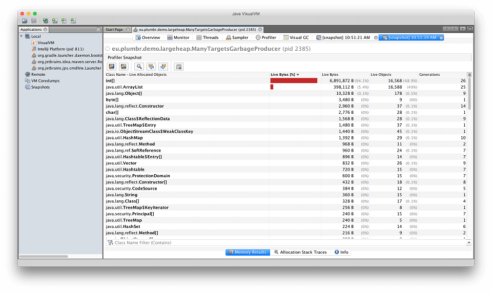
上图按照每个类被创建的对象数量多少来排序。看第一行可以知道，创建的最多的对象是 int[] 数组。鼠标右键单击这行，就可以看到这些对象都在哪些地方创建的：
与 hprof 相比，JVisualVM 更加容易使用 —— 比如上面的截图中，在一个地方就可以看到所有 int[] 的分配信息，所以多次在同一处代码进行分配的情况就很容易发现。
AProf
AProf 是一款重要的分析器，是由 Devexperts 开发的 AProf。内存分配分析器 AProf 也被打包为 Java agent 的形式。
用 AProf 分析应用程序，需要修改 JVM 启动脚本，类似这样：
java -javaagent:/path-to/aprof.jar com.yourcompany.YourApplication
重启应用之后，工作目录下会生成一个 aprof.txt 文件。此文件每分钟更新一次，包含这样的信息：
========================================================================================================================
TOTAL allocation dump for 91,289 ms (0h01m31s)
Allocated 1,769,670,584 bytes in 24,868,088 objects of 425 classes in 2,127 locations
========================================================================================================================
Top allocation-inducing locations with the data types allocated from them
------------------------------------------------------------------------------------------------------------------------
eu.plumbr.demo.largeheap.ManyTargetsGarbageProducer.newRandomClassObject: 1,423,675,776 (80.44%) bytes in 17,113,721 (68.81%) objects (avg size 83 bytes)
int[]: 711,322,976 (40.19%) bytes in 1,709,911 (6.87%) objects (avg size 416 bytes)
char[]: 369,550,816 (20.88%) bytes in 5,132,759 (20.63%) objects (avg size 72 bytes)
java.lang.reflect.Constructor: 136,800,000 (7.73%) bytes in 1,710,000 (6.87%) objects (avg size 80 bytes)
java.lang.Object[]: 41,079,872 (2.32%) bytes in 1,710,712 (6.87%) objects (avg size 24 bytes)
java.lang.String: 41,063,496 (2.32%) bytes in 1,710,979 (6.88%) objects (avg size 24 bytes)
java.util.ArrayList: 41,050,680 (2.31%) bytes in 1,710,445 (6.87%) objects (avg size 24 bytes)
... cut for brevity ...
上面的输出是按照 size 进行排序的。可以看出，80.44% 的 bytes 和 68.81% 的 objects 是在 ManyTargetsGarbageProducer.newRandomClassObject() 方法中分配的。其中，int[] 数组占用了 40.19% 的内存，是最大的一个。
继续往下看，会发现 allocation traces（分配痕迹）相关的内容，也是以 allocation size 排序的：
Top allocated data types with reverse location traces
------------------------------------------------------------------------------------------------------------------------
int[]: 725,306,304 (40.98%) bytes in 1,954,234 (7.85%) objects (avg size 371 bytes)
eu.plumbr.demo.largeheap.ClonableClass0006.: 38,357,696 (2.16%) bytes in 92,206 (0.37%) objects (avg size 416 bytes)
java.lang.reflect.Constructor.newInstance: 38,357,696 (2.16%) bytes in 92,206 (0.37%) objects (avg size 416 bytes)
eu.plumbr.demo.largeheap.ManyTargetsGarbageProducer.newRandomClassObject: 38,357,280 (2.16%) bytes in 92,205 (0.37%) objects (avg size 416 bytes)
java.lang.reflect.Constructor.newInstance: 416 (0.00%) bytes in 1 (0.00%) objects (avg size 416 bytes)
... cut for brevity ...
可以看到，int[] 数组的分配，在 ClonableClass0006 构造函数中继续增大。
和其他工具一样，AProf 揭露了 分配的大小以及位置信息（allocation size and locations），从而能够快速找到最耗内存的部分。
在我们看来，AProf 是非常有用的分配分析器，因为它只专注于内存分配，所以做得最好。同时这款工具是开源免费的，资源开销也最小。
参考链接
© 2019 - 2023 Liangliang Lee. Powered by gin and hexo-theme-book.